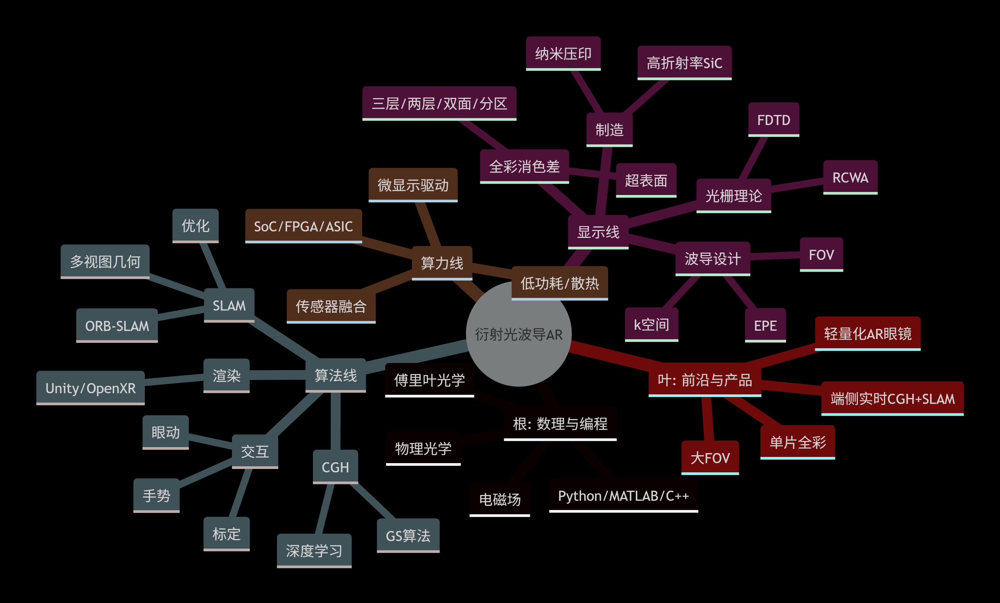
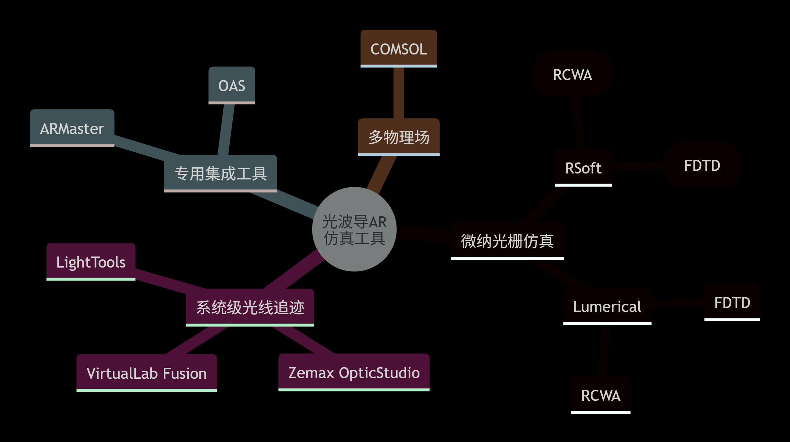
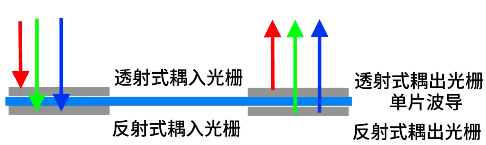
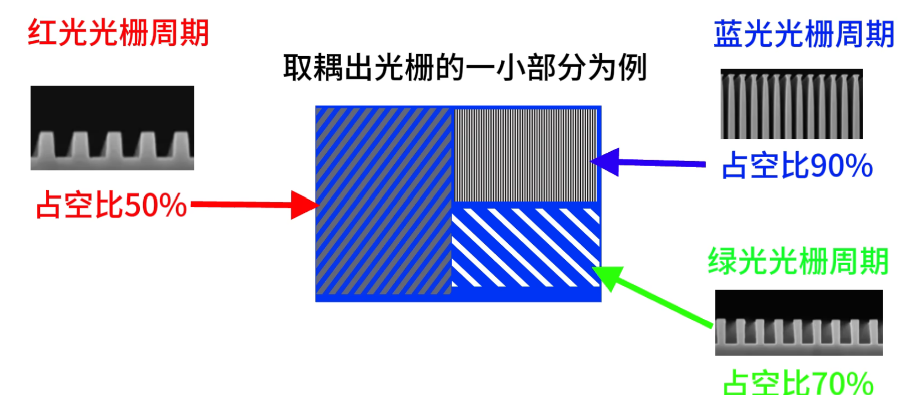
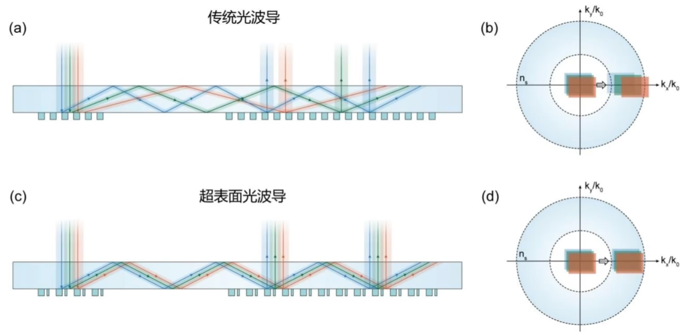

optical_waveguide_AR
optical_waveguide_AR
When I write down these words it is 31th July 2026. I have just finished my homework, a research report about VR & AR optical designs. These days an idea entered my head – can I do research on AR? For me, this field is quite comprehensive. I have learned specialized knowledge on optics, especially electromagnetic waves, but those 3D display tech are another area.
Composite
算力（芯片）+算法（SLAM）+显示（波导）


【内部讲座：AR眼镜及其光学系统】https://www.bilibili.com/video/BV1qYtrezErr?vd_source=ad616599769425458264249584e0cc82 笔记：
XR = MR(video see-through VR generally) + AR(optical see-through) + VR
AR重量门槛：50g
OPT
各种设计方案，为什么光波导最好？
单片全彩光波导问题，为什么只有超表面能解决？
衍射波导diffraction waveguide有色散问题dispersion
plan:
- three layers三层波导（三原色）: thick & high precision requirements
- two layers两层波导: red & green+blue(yellow)
- one layer two surfaces双面: transmission & reflection

- one layer zone分区调控: 理论上无法彻底解决

- metasurface：

工程化光波导方案复现：https://oshwhub.com/wwwwyt/guangbodao
CS
All articles on this blog are licensed under CC BY-NC-SA 4.0 unless otherwise stated.